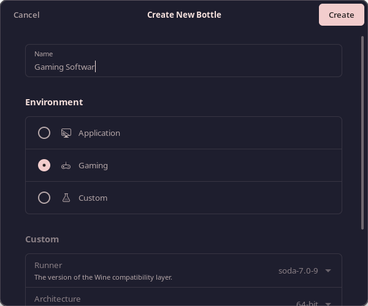

Tutorial Instalasi Game Steamunlocked di Linux

Assalamualaikum Wr Wb. Kembali lagi bersama saya di Tutorial kali ini saya akan memberitahu kalian cara untuk instalasi Game Steamunlocked di Linux.
Gaming di Linux sudah bukan hal yang sulit dan terdengar mustahil lagi. Semenjak dikembangkannya WINE dan Proton sebagai Software yang menerjemahkan API Windows ke API Linux, maka kita bisa memainkan game Windows di Linux.
WINE dan Proton adalah Software yang bisa menerjemahkan API Windows ke API Linux. Salah satu program yang bisa memudahkan kita untuk melakukannya adalah Bottle.
Bottle adalah software yang bisa menjalankan software Windows di Linux dengan menggunakan sistem yang ter-kontainerisasi dan menjaga agar Software Windows yang berjalan tetap stabil.
Tanpa berbasa-basi lagi, mari kita mulai...
1. Pertama-tama install dulu Flatpak yang merupakan package manager untuk instalasi Bottle
Untuk menginstal flatpak, buka terminal dan kita bisa gunakan perintah berikut:
- Arch Linux dan Variannya:
- Debian/Ubuntu/Linux Mint dan Variannya:
- Fedora/RHEL/CentOS dan Variannya:
2. Setelah instalasi flatpak selesai, Reboot Komputer Anda.
Sangat dianjurkan untuk Reboot setelah instalasi flatpak agar program flatpak berjalan secara optimal nantinya.
3. Buka Terminal dan Jalankan perintah berikut untuk instalasi Bottle
4. Setelah Bottle terinstall, maka akan bisa dibuka langsung di Menu Launcher atau App Launcher
Cari saja "Bottles" di Menu Launcher yang ada di Desktop Environment masing-masing.
5. Jalankan Bottles dan tunggu sampai program siap.
6. Klik tanda tambah "+" yang ada di pojok kiri atas program
7. Pilih untuk "Gaming" dan beri nama Kontainer Bottle Anda sesuka hati

8. Klik "Run Executable..." dan cari file Game Steamunlocked yang sudah anda unduh
Disini saya memakai game Lego Star Wars: The Complete Saga.
9. Maka file sudah ditambahkan di Shorcut, tinggal klik tanda segitiga untuk memainkannya.
10. Selamat... Anda telah bisa memainkan game Steamunlocked di Linux.